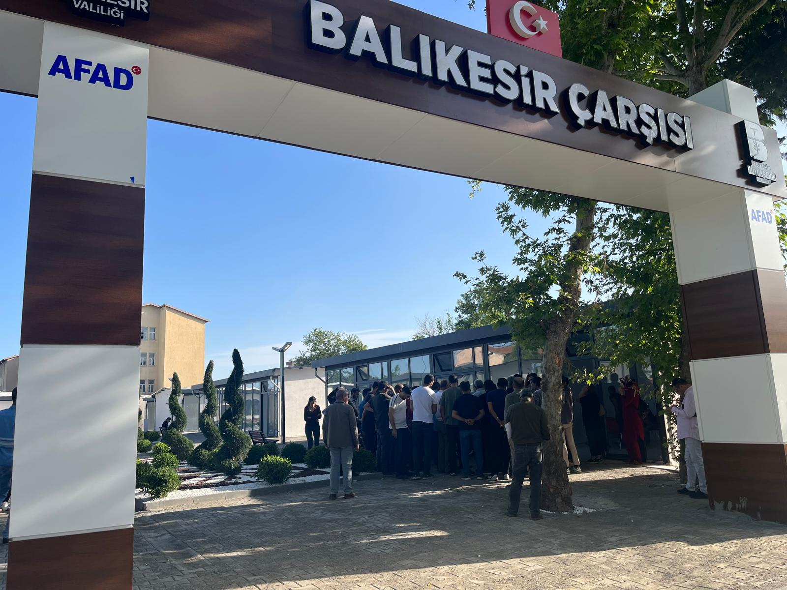

Adıyaman ili, merkez ilçesinde hayata geçirdiğimiz Balıkesir Çarşısı projesini, depremden sonraki kritik süreçte yalnızca 57 gün (yaklaşık 2 ay) gibi kısa bir sürede tamamlayarak halkımızın hizmetine sunmanın gururunu yaşıyoruz.
Toplam 6.586 m² alan üzerine inşa edilen bu projede, 925 m²’lik peyzaj alanı da dahil olmak üzere fonksiyonel ve estetik bir yaşam alanı oluşturulmuştur. Projenin içeriği ise şu şekilde şekillendirilmiştir:
- 87 adet dükkan
- 1 adet mescit
- 1 adet bayan WC ve abdesthane
- 1 adet erkek WC ve abdesthane
İnşaat sektöründeki uzmanlığımız ve ekibimizin özverili çalışmalarıyla, bu önemli projeyi kısa sürede hayata geçirerek Adıyaman halkına hizmet sunmaktan mutluluk duyuyoruz. Toplumun ihtiyaçlarına hızlı, güvenilir ve kaliteli çözümler üretmeye devam edeceğiz.
